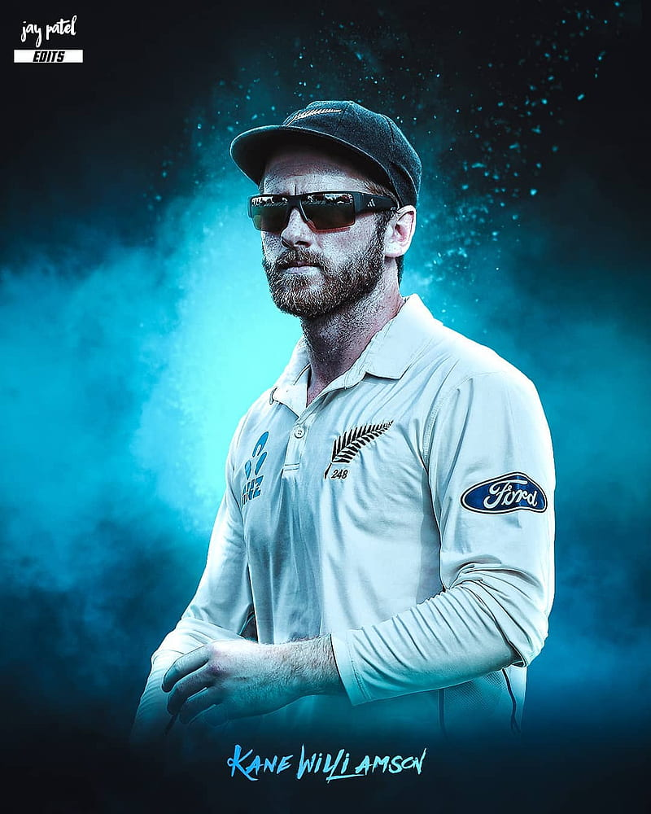
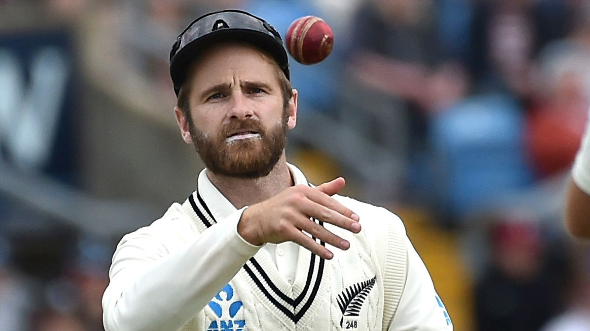

Kane Stuart Williamson (born 8 August 1990)[1] is a New Zealand cricketer. On 27 February 2023, Williamson became the all-time leading run-scorer for New Zealand in Test cricket.[2] A right-handed batsman and an occasional off spin bowler, he is widely regarded as one of the greatest contemporary batsmen and captains New Zealand has ever produced. He captained New Zealand to victory in the 2021 ICC World Test Championship final.
 to know about his records ,click here. To know about his ranking ,click here. his instagram id click here. 